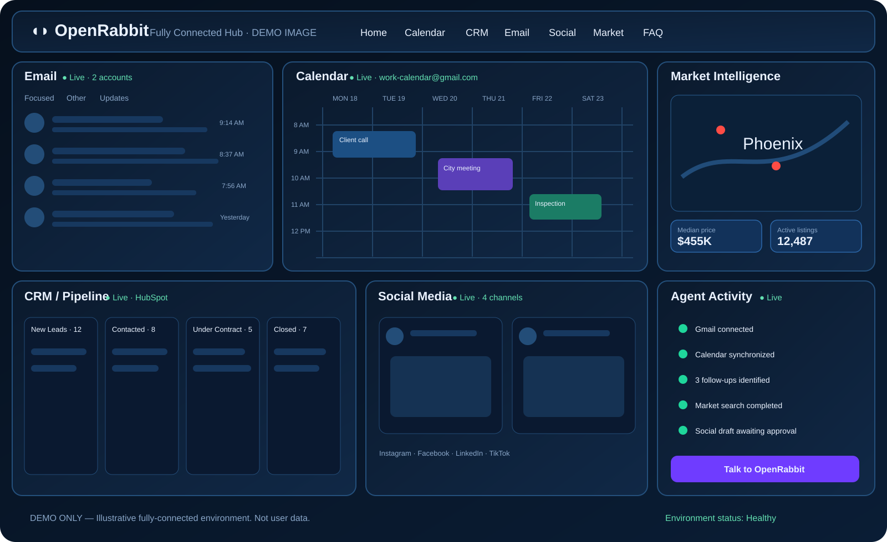

The operational OpenRabbit workspace never presents placeholder information as if it were yours. Disconnected surfaces show polished silhouettes and a clear connection action. This FAQ is the safe place for illustrative examples of what the hub can look like once every provider is connected.
The silhouette gives users an immediate sense of what will occupy the space without fabricating inbox messages, events, leads, posts or activity. The moment authorization succeeds, real provider data replaces that background.
Yes. Email and Calendar are separate connection choices. The Calendar authorization launches its own Google account picker so a user can choose the account that owns or has access to the calendars they actually want OpenRabbit to use.
Agent Activity starts empty because nothing has happened yet. Once OpenRabbit runs, a provider connects, an approval is created, or an action completes, the real activity history appears.
Google Maps can operate as a real searchable map independently. The OpenAI agent can also be live, but it is instructed to reason only from sources that are actually connected and to state when required context is unavailable.
This is an illustrative mock of the same Command Center after Email, Calendar, CRM, Social, Market and Agent Activity are all populated. It is intentionally labeled as a demo and is not user data.
